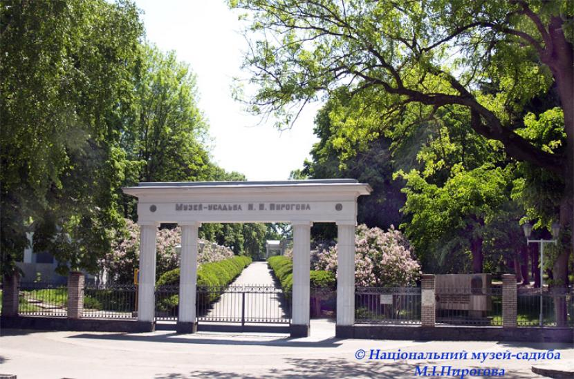
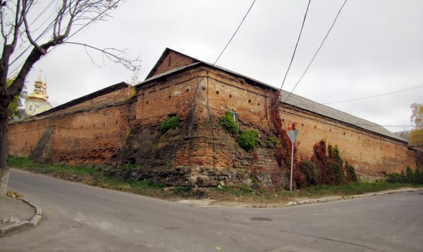
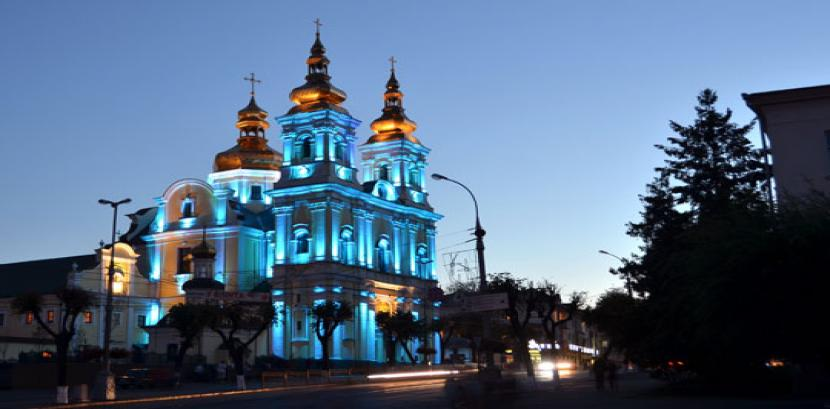

Найбільший в Україні та Європі плавучий фонтан

Національний музей-садиба М. І. Пирогова розташований в південно-західній частині Вінниці

Комплекс оборонних і монастирських споруд XVII століття у Вінниці

Спасо-Преображенський кафедральний собор – головний православний храм у ВінниціПарк-пам'ятка садово-паркового мистецтва загальнодержавного значення у Вінниці, розташований у центрі міста